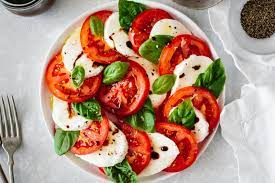

| Meal Type |
Recipe |
Ingredients |
Instructions |
| Breakfast |
Pancakes |
Milk, flour, eggs, sugar, baking powder |
Mix all ingredients, pour onto hot griddle, flip when bubbles form. Serve hot with syrup and fruit. |
 |
| Lunch |
Caprese Salad |
Tomatoes, fresh mozzarella, basil, olive oil, balsamic vinegar, salt, pepper |
Layer sliced tomatoes and mozzarella, sprinkle with torn basil leaves, drizzle with olive oil and balsamic vinegar, season with salt and pepper. Serve as a light and refreshing appetizer. |
|  |
| Dinner |
Spaghetti Carbonara |
Spaghetti, eggs, Parmesan cheese, bacon or pancetta, garlic, black pepper |
Cook spaghetti, sauté garlic and bacon, mix eggs and cheese, toss together with hot pasta, season with pepper. Serve immediately with extra Parmesan cheese. |
 |
| Dessert |
Chocolate Cake |
Flour, sugar, cocoa powder, baking powder, eggs, milk, oil, vanilla extract |
Mix dry ingredients, add wet ingredients, pour into greased cake pan, bake at 350°F for 30-35 minutes. Let cool before serving, optionally frost with chocolate frosting. |
 |